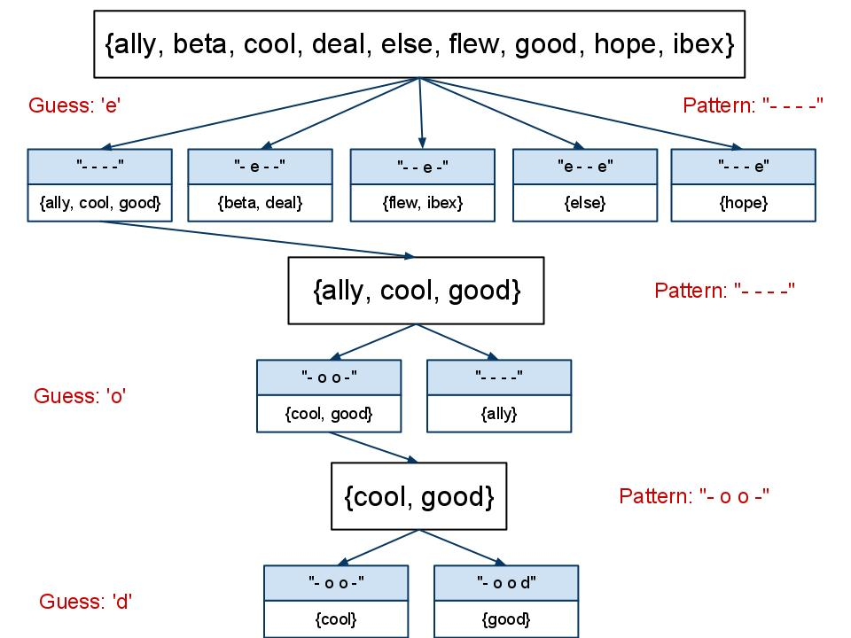

CMPT 306 Algorithms and Data Structures
Fall 2017
Homework #2 - Evil Hangman
In Lab
#3 you designed a program that played a game of Hangman using
the standard rules of the game where a hidden word was chosen by
your program. As the player guessed letters, your program checked if
that letter occurred in the word, and, if so, indicated where that
letter occurred.
Imagine if you instead wrote a program that cheated! That
is, instead of choosing a word at the beginning of the game, your
program instead delays choosing a word for as long as possible.
As an example, imagine the status of the word being guessed is:
D O _ B L E
and the player has only one guess left. In the English language
there are only two words that match this pattern - "D O U B L
E" and "D O A B L E". If you are playing the game fairly, the player
has a 50/50 chance of guessing the correct letter and winning. But
if you are cheating, you actually haven't yet decided if the word is
either "D O U B L E" or "D O A B L E"; it will hold off as long as
possible. If the player guesses 'U', you say, "I'm so
sorry, but the word was D O A B L E". If the player
guesses the letter 'A', you instead say "I'm so sorry, but the
word was D O U B L E". In this scenario, because you
cheated, the player can never win!
Let's illustrate with another example: You are playing Hangman and
you must choose a word. Let's say the word must be of length four.
Rather than committing to a word, you instead generate a list
of every four-letter word in your dictionary. For simplicity, let's
assume there are only the following four-letter words:
ALLY BETA COOL
DEAL ELSE
FLEW GOOD HOPE
IBEX
Suppose the player then guesses the letter 'E". This is word list
from above with the letter 'E" highlighted:
ALLY BETA
COOL DEAL ELSE
FLEW GOOD
HOPE IBEX
When we examine these words, we see each word falls into one of five
word families:
_ _ _ _ which contains the words ALLY, COOL, and GOOD
_E_ _ which contains the words BETA and DEAL
_ _ E _ which contains the words FLEW and IBEX
E _ _ E containing ELSE
_ _ _ E containing HOPE
To proceed from here, you must select one word family containing
possible words. There are different strategies for selecting a word
family - perhaps you will choose the family containing the most
obscure words. Another option is to choose the family containing the
largest number of words. This strategy allows you to have the most
options, so your program will be designed using this approach.
Of the five word families, the family _ _ _ _ contains three words,
so you will select that family. The possible words to choose from
are now
ALLY COOL GOOD
and considering the guess 'E' is not contained in any of the word
families, you would indicate to the player their guess does not
match any of the words.
Next consider if the player guesses 'O', your three words are broken
down into two word families:
_ O O _ containing COOL and GOOD
_ _ _ _ containing ALLY
Using the strategy of selecting the largest word family, your list
of potential words is now
COOL GOOD
Next consider what happens if the player guesses a letter which does
not occur in any of the potential words. For example, if the player
chose 'T' there is only one word family
_ _ _ _ containing COOL and GOOD
When there is only one word family, it is of course the largest and
therefore you continue with your existing word family. Similarly -
if two word families are the same size you can choose either family.
(Of course optimized versions of this game may choose a family based
upon a second criterion such as word obscurity.)
Graphically, this strategy appears as follows:

You continue using this strategy until your opponent wins (which is
of course highly unlikely) or they run out of guesses (highly
likely.) As you defer selecting a word as long as possible, if your
opponent runs out of guesses, you can select any word from your
current list of words and display that word.
Details
Use your solution to Lab #3 as a starting point. You will make the
following additions to this program:
1. Read in the file words.txt . I strongly recommend you make this
list of words much smaller - select 30 or so words where multiple
words have the same size.
2. Prompt the player for a word length. Perform error checking that
they enter an integer < 3 (do not allow words shorter than three
characters) and that they enter a word length where you have a word
of that size.
3. Prompt the player for a number of guesses which must be an
integer > 0.
You will then play cheating hangman using the algorithm described
above.
1. Construct a list of words from words.txt whose length matches the
input length.
2. Print out how many guesses the user has remaining, as well as the
status of their guess i.e. the positions of the blank letters as
well as the letters they have guessed correctly. (This is
essentially what you have done in Lab #3.) In addition, print out
the number of possible words your game can choose from. (This output
is not helpful to the player, but is a useful step for determining
the progress of your program.)
3. Prompt the player for guesses, error checking if they have
already made that guess. (Again, you have done this in Lab #3.)
4. Partition the words into word families using the strategy
described above. This will be the most challenging task when writing
this program, so spend time thinking how you will achieve this.
Consider what Python data structures you will require - likely
lists, but you may find queues and priority queues helpful. You may
find it helpful to work through the code for different algorithms
before integrating it into your game.
Remember that the position of letters matters just as much as letter
frequency. When calculating word families, you must not only
determine the number of times the letter occurs in the word, but
also the positions of the letters. For example, BEER and HERE are in
two different word families even though they each have two 'E's in
them. Perhaps your original algorithm can partition families
according to the number of occurrences, and then you later partition
according to positions.
5. If the player has run out of guesses, pick a word from the
remaining words and display it.
6. If the player correctly guesses the word - provide a very
well-deserved congratulations message as they clearly earned it!
You may submit a solution to this program working with either a
partner or individually. Submit your solution to Canvas.
Your Own Work
As with all programming assignments, you are responsible for
submitting your own work, and not the work completed by others.
(Unless of course you complete this assignment while working with a
partner.) If I detect you have submitted work that is not your own,
please be prepared to describe your work to me in person.